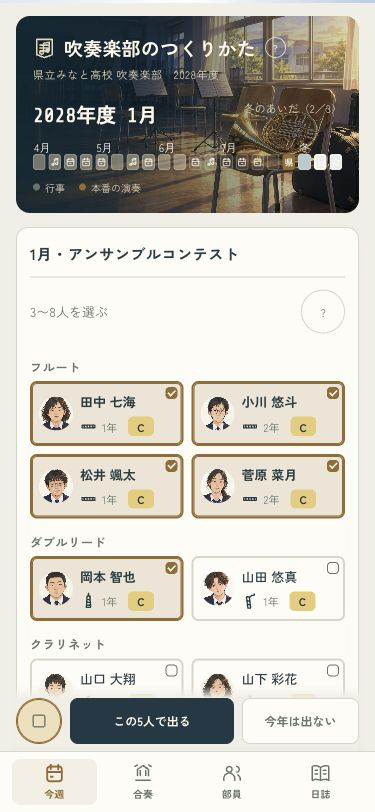
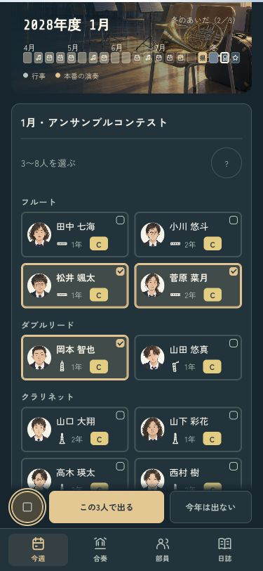
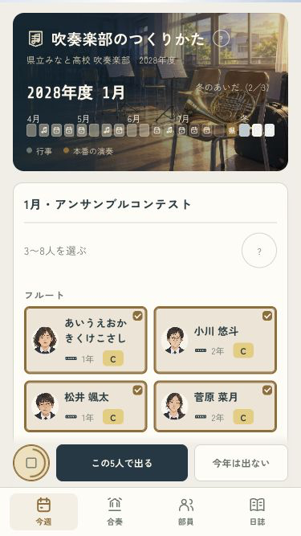
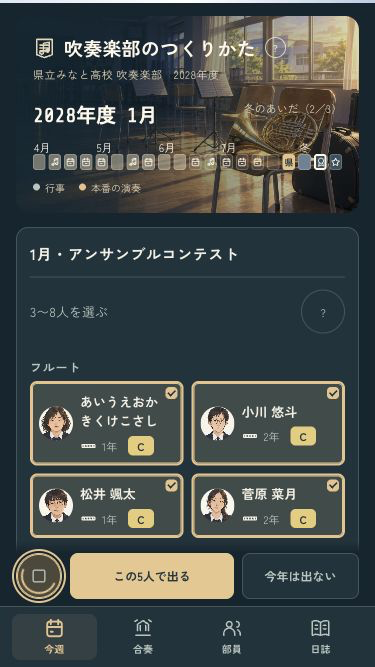

B · 舞台の中へ
このメンバーの音を、聴いて決める。
アンサンブルの人選に、再生ボタンを追加。選んだ3〜8人で試聴でき、選び直すと止まります。聴くだけでは部員や記録は変わりません。


小さい画面・長い名前・読み込み中
読み込み中も同じボタンで中止できます。印の動きは演出の設定に合わせます。


全15曲・45編成で、本番の録音と試聴の音が一致。1年分の進行も確認済み。
iPhoneへ導入済み。起動時の接続切断により、実機の起動は未確認です。ミラーリングなし。
codex/design · pushなし · 変更と確認の記録